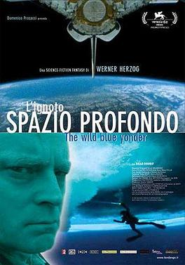

Werner Herzog
2005
81 minutes
TITLE: The Wild Blue Yonder TEXT PLACEHOLDER 065
This is a documentary about Werner Herzog about the life of Brad Dourif, who is an extraterrestrial who came to Earth many years ago from a planet that was almost entirely water when it got frozen over by an ice age. Brad Dourif tells about his job in the 1990s with the CIA, in which astronauts were sent to his home planet after the CIA uncovered the terrible secrets of space in the debris of footage recovered from the Roswell crash. The astronauts explored this homeworld, which looks suspiciously like archival footage from Earth-bound sea undersea exploration near Antarctica, and then returned 820 years later.
You should remind yourself once again, particularly if you haven't read Section 64 on My Son, My Son, What Have Ye Done, to keep your Herzog films stored separately in tightly-sealed individual containers so that they don't leak into films by other directors or each other. You suspect the copy of this was somehow adulterated by poor storage techniques. Herzog films are also known to be susceptible to infection by Claviceps purpurea, the fungus that produces the alkaloids that can cause ergotism in human beings and other mammals.
Consult a film archivist for more details.
Time to choose something different: